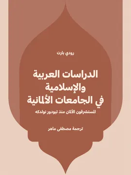

الدراسات العربية والإسلامية في الجامعات الألمانية: المستشرقون الألمان منذ تيودور نولدكه

قراءة عربية أصلية محددة النطاق في الصفحات 9 إلى 14 من ملف PDF المرتبط، وليست تلخيصا كاملا للكتاب. نناقش ما تدعمه هذه المقاطع فقط.
زيارة نولدكه في كارلسروهه صيف ١٩٣٠
يروي المؤلف أنه في صيف ١٩٣٠ أتيحت له فرصة القيام من جامعة هايدلبرج، حيث كان مضطلعًا بالدراسات الشرقية، بزيارة تيودور نولدكه (١٨٣٦–١٩٣٠) في مدينة كارلسروهه القريبة، لزيارة أستاذ الاستشراق الجليل الذي حظي بتقدير عالمي في مادته. كانت الزيارة خبرة جد مؤثرة في نفس زائر لم يبلغ الثلاثين بعد ولم يبدأ إلا منذ قليل في توسيع أفق علمه؛ إذ أوقفته أمام عالم هرِم بلغ من العمر أكثر من ثلاثة أضعاف ما بلغ، ومكنته من التناقش معه في أمور العلم. كان نولدكه آنذاك يعاني طبعًا طائفة من العلل الجسمانية، لكنه كان من الناحية العقلية نشيطًا يقظًا على نحو يثير الدهشة، ويدخل عن طيب خاطر في مناقشة موضوعات خارجة عن ميادين تخصصه ذاتها، ويضمر وراء كل كلمة ذلك الضرب من صفاء الفكر الإنساني الذي يقنع المستمع بصدقها منذ البداية. أحس الزائر كأنه طالب علم خرج ليؤدي فروض الاحترام لشيخ ذائع الصيت ويتصل عن طريقه بتقاليد العلم وتراثه.
زاوية وحدود القراءة
قراءة موجزة من ص ٩ إلى ص ١٤ من أصل ١٠٢ صفحة، تعرض مقدمة المؤلف، لا الكتاب كاملًا.
الطبعة والقراءة
هذه النسخة من الكتاب صادرة ومتاحة مجانًا بموجب اتفاق قانوني بين مؤسسة هنداوي وأسرة السيد الدكتور مصطفى ماهر.
تنزيل PDF المجاني ↓ القراءة والمصدر الرسمي ↗